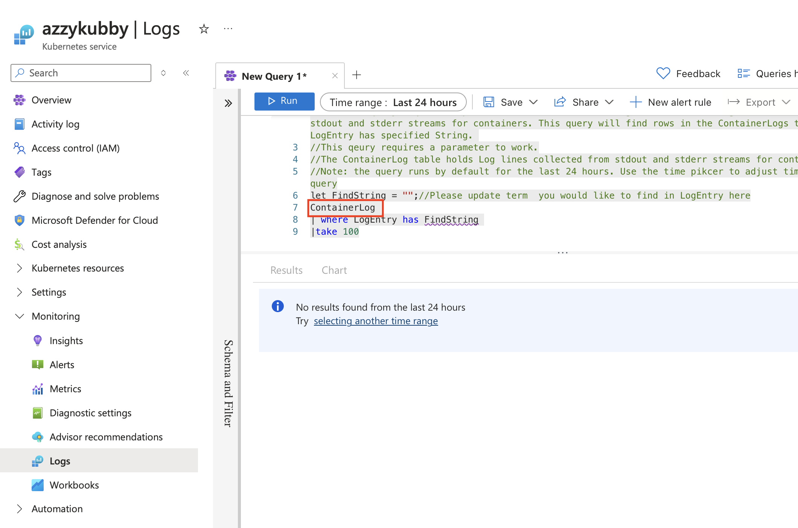

I Want to Love Azure, But They Make It Hard
I use Azure at work. It's fine, nothing stands out as great but certainly good enough. So I try using it at home, and I keep finding challenges.
I'm not here to just gripe. I know cloud environments are mammoth undertakings. But when I'm paying for a service, I expect it to work without tripping over needless hurdles—and Azure has thrown more than its fair share of those my way.
Grievances
Here's a list of frustrations:
- Constant service renames with outdated docs — good luck finding what you need in Azure;s shifting landscape. For example, Azure CNI is now Azure CNI Node Subnet according to the Portal interface, but the docs still say it's Azure CNI networking, matching no UI entry ever, and meaning no search ever appears to show the feature you're told to look for.
- Broken Kubernetes log search examples — when the default table name changed, so did the usefulness of Azure's own examples.. Here's a screenshot:  See how the default table is called ContainerLog? The default table that receives your logs is now called ContainerLogV2, so this queries an empty-by-default table. It took me and a team of four Azure support engineers to figure out this problem about 18 months ago when the changeover happened, and the bug report I made has never resulted in the action of updating the examples to use ContainerLogV2.
- You can pass all of the validations for an Azure Kubernetes Service cluster, only to find out that the virtual machine type Azure selected by default for you doesn't exist in your deployment region when you try to create the VM. Why offer a nonsensical default?
- Azure Portal will automatically request required "providers", which enable relevant API endpoints for the services for your subscription when you try to use that service. Azure CLI does not do this, nor does the Microsoft-developed Azure Terraform Provider. It's inconsistent.
- The tooling to enable required providers is often broken, leaving the provider in a state of permanently being requested. There's no user-available fix for this, it requires a support ticket.
- The small business "free" tier of Azure does not allow you to submit support tickets. You have to pay the monthly fee for this privilege
- The response times for support tickets that you are paying for is not respected by the support teams. A 24 hour response time you are paying for can easily take 1-2 weeks to get a reply.
- Again, AKS. You are offered a list of VM sizes for system nodes, including B Series node sizes. If you try to use a B-Series node, you are given a red warning that the node sizes you were just offered "cannot be scheduled". Why offer them?
- The consumer version of Azure does not allow you to create integrations for O365 services, such as writing and embedding bots in Teams.
- Again, AKS. If you request spot instances in the a consumer tier for Azure, to keep costs low, they often come with Premium SSDs that cost as much as the instance. You can intend to have a stateless cluster, but you have to pay the Premium SSD tax.
- There's no coherence to the documentation: it reads like ten geographically, uncommunicating teams write the docs for every individual service.
- The docs aren't kept up to date with code changes in supporting projects, so you read a learn.microsoft.com page saying "The example works like X" and then you use the example and it does in fact not work at all like that
- Here's the Azure Terraform Provider advice for dealing with broken Azure Resource Providers:
│ If you don't have permission to register Resource Providers you may wish to disable this │ functionality by adding the following to the Provider block: │ │ provider "azurerm" { │ "resource_provider_registrations = "none" │ }
I don't enjoy being a critic for criticism's sake. But these issues aren't just frustrating — they're a barrier to getting things done. It took me and a colleague months of sifting docs and examples to put together all the info for oauth projects, for example.
This reminds me of OpenBSD — a small team, minimal bugs, and docs that are always up to date. It's a stark contrast to Azure's sprawling, inconsistent documentation.
I admire that Microsoft is trying to change with the times, create a very responsive org that moves fast with indepenent teams, much more like open source. I don't go to Microsoft for an under-documented experience, I expect stability and attention to detail—qualities that seem to be slipping.